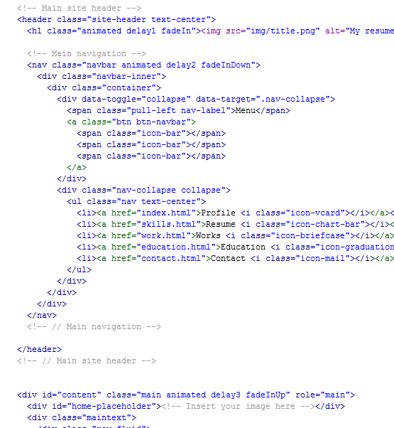
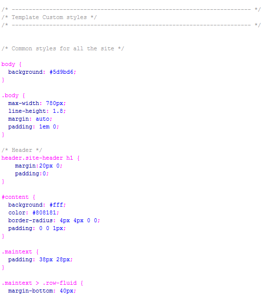
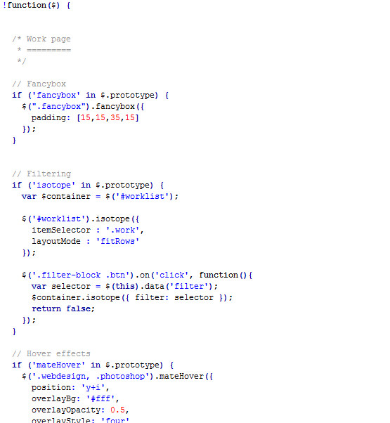

Resume HTML Template | Documentation
Created: 19/04/2013
By: Coralix Themes
Email: coralixthemes(at)gmail.com
Thank you for purchasing my theme. If you have any questions that are beyond the scope of this help file, please feel free to contact us.
Installing the Template on your Hosting Server
- → After unzip the Template item, you will found html folder with all this files you will upload to your site.
- → You can see this html template in any broswer. But! The social network icons at the footer will only work once your website is on your server.
- → Start your FTP client (I persoanlly use Filezila which is free) and login. Login to your server. You will need your server name (often times this will be your domain name), username, and password that you setup with the hosting company.
- → Locate the domain folder where you wish to upload your item files on your server. You are going to click and drag every file that you have labeled .html, .css, .php, .js into your FTP client.
- → Once the files are done uploading, rename the file you want to be your home page as 'index.html'.
- → Is should be like: www.yourwebsitename.com/index.html
Structure
This Template has a Responsive layout with a variation of column layouts depending on the page. This theme uses Skeleton grid system (12 columns) which will help streamline any customization you wish to make. If you're unfamiliar with this framework go to Boostrap
Pages
- index.html
- skills.html
- education.html
- work.html
- work single page.html
- contact.html
HTML Structure
The code is commented so it will be easy for you find anything you want to change.
Here is an example of the index.html code:
CSS Structure
I'm using one main CSS file (style.css) in this theme which you are free to modify depending on the customization you require. There are also six additional style sheets that I do not recommend changing. Those style sheets reside in the 'CSS' folder. Code:
/* Site Styles
================================================== */
/* header */
/* slider */
/* main container
/* footer */
CSS Example Image Structure
Inside the CSS Folder there is a file called style.css. This is the file that you will need to edit to change color, fonts, sizes, etc of your Template. It is well commented so it will be easy for you find and change anything you want.
Here is an example of the style.css code:
Javascript Settings
If you need to modify any settings for ( Sliders, Twitter Widget and more) go to js/custom.js and you will find eveything there.
Tips
USE FIREBUG or Chrome DEVELOPER TOOLS!
I'm not going to tell you about when i discovered this great tool, or necessarily why i like it and so on. I'm actually going to push you into using it :) I mean it, you can't be a serious developer unless you're using it.
Scenarios:
- → You want to change the size/color/etc of a certain font and search into 3 stylesheets with 1000 lines each and you can find that damn rule which contains the property
- → You want to get rid of an ugly space somewhere
- → Some block has some absolute position and overlays another block
- → You want to inspect an element to see if it has some sort of margin padding etc.
- → And etc. etc.
Mainly (for me), Firebug is about tracking the css code and to debug a website seeing the actual final (generated code). This tool is about productivity, you want to make things quicker - you should have it; you want to make things better - you should have it; you want to learn more and more - YOU SHOULD HAVE IT.
Now, Firebug is made for Mozilla Firefox, you can find it here
For those of you who are using different browsers you already have some builtin tools: Chrome / Safari / Opera / Internet Explorer
Instead of making huge tutorials about Firebug here, i will point you some great links so you can easily learn it:
Template customization
Logo Edition
Open the file img/logo.png and replace it for your logo. Save it with the same name. Be sure to save it as PNG.
If you save it as JPG you will have to edit the html file and replace logo.png for logo.jpg.
Font Icons Edition
We are using fontello icons, so to change any icon of this template you just need to go to the class of the i (in the html file) and replace the name of the icon with the new name.
Photoshop Files
No PSD File is included here but you can buy it on our Profile.

Sources and Credits
# Images:
# Code:
# Fonts:
- - Helvetica, Arial (standar fonts)
# Icons:
Once again, thank you so much for purchasing this theme. As I said at the beginning, I'd be glad to help you if you have any questions relating to this template. No guarantees, but I'll do my best to assist. If you have a more general question relating to the themes on ThemeForest, you might consider visiting the forums and asking your question in the "Item Discussion" section.
If you like our theme please do not forget to rate it!

CoralixThemes